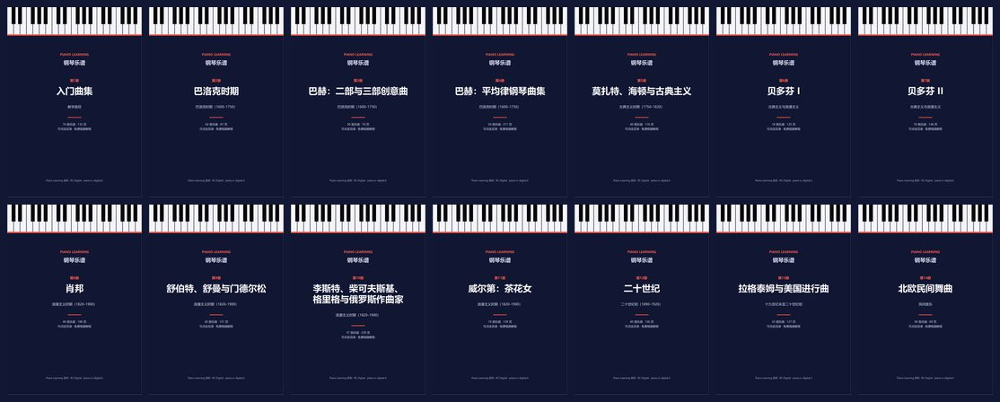
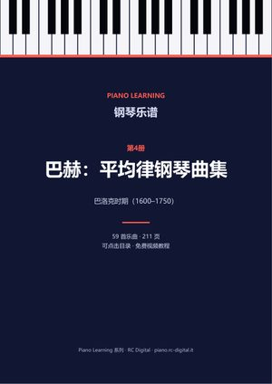
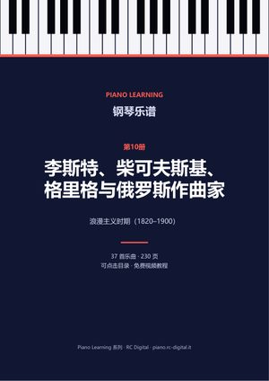

钢琴乐谱 PDF
14册乐谱按作曲家和时期编排，附可点击目录、作曲家生平，以及每首有视频教程的乐曲的教程链接。每次购买均包含10种语言的 PDF。

单册

巴洛克时期（1600–1750）第4册巴赫：平均律钢琴曲集
《平均律钢琴曲集》中的前奏曲与赋格、英国组曲和法国组曲、BWV 1006a 组曲、《赋格的艺术》。
59 首乐曲 · 211 页
€3.99购买

浪漫主义时期（1820–1900）第10册李斯特、柴可夫斯基、格里格与俄罗斯作曲家
《安慰曲》、《四季》、《培尔·金特》、《图画展览会》及其他浪漫派作品。
37 首乐曲 · 230 页
€3.99购买
通过 Payhip 安全付款，付款后立即通过电子邮件下载。这些乐谱是自由版本（公有领域或 Creative Commons）：你也可以在本站各乐曲页面免费逐首获取；这里把它们全部整理在一个文件中，并附每个版本的完整来源。